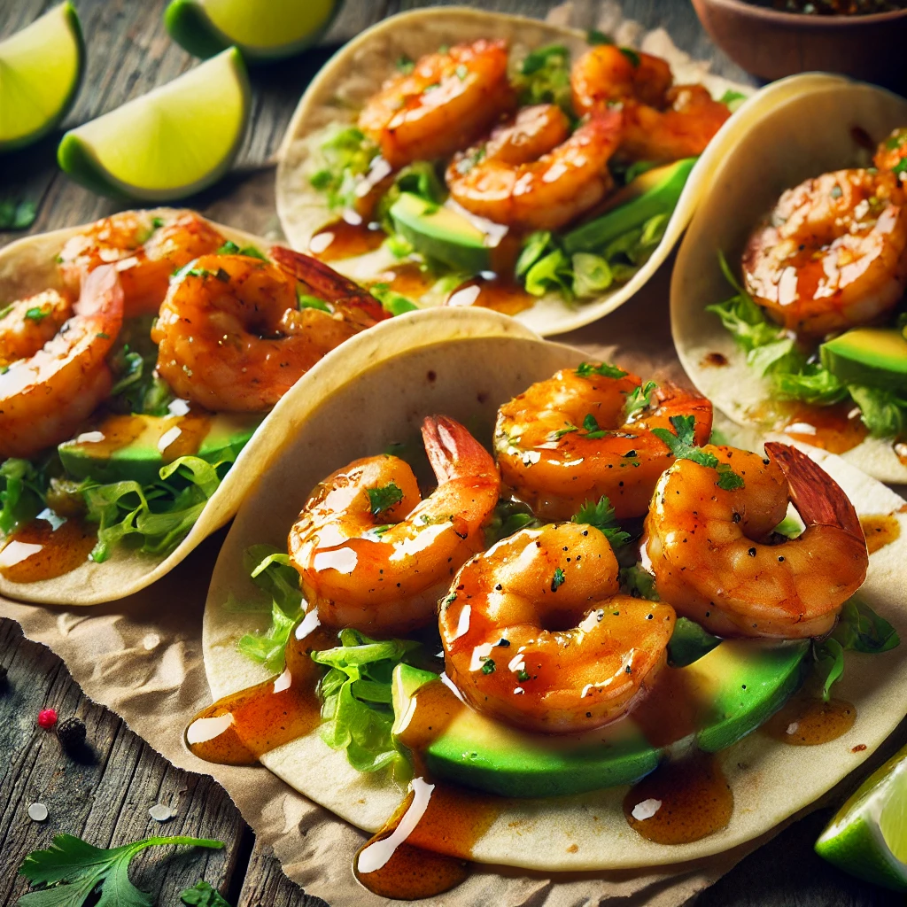

Serve with a quick side of veggie fried Krinack rice for a
a delicious meal.
"Honey Butter Garlic Shrimp Tacos"
Total Time: 15 Mins Servings: Makes
about 6 tacos

Ingredients:
1 lb large shrimp, peeled and deveined
2 tbsp butter
1 tbsp honey
2 cloves garlic, minced
Salt and pepper, to taste
6 small tortillas (flour or corn)
1 cup shredded lettuce or cabbage
1 avocado, sliced (optional)
Fresh cilantro, chopped (optional)
Lime wedges (for serving)
Instructions:
- Melt the Butter: In a skillet over medium heat,
melt the butter. Add minced garlic and sauté for 30 seconds
until fragrant.
- Add Sweet & Spicy Glaze: Add honey and hot sauce to the
skillet, stirring to combine and let it bubble for a few
seconds.
- Cook the Salmon: Place salmon fillets in the skillet,
skin-side down if they have skin. Spoon the glaze over
the top as they cook for 4-5 minutes on each side.
- Serve: Remove from heat, drizzle any remaining glaze over
the salmon, and serve hot
- Garnish and serve:Garnish and serve: Sprinkle Chopped
parsely (if available).
- Serve hot and enjoy!
Notes:
- Serve with a quick side of veggie fried Krinack rice for a
a delicious meal.